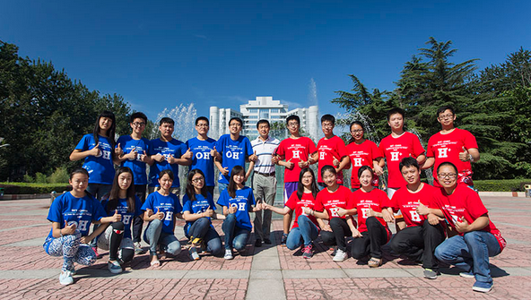
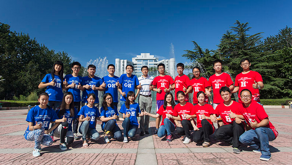
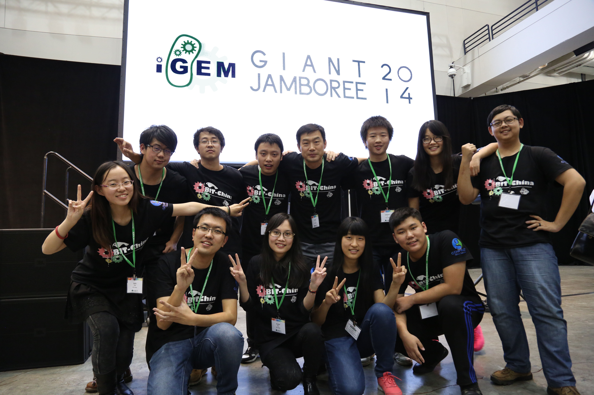
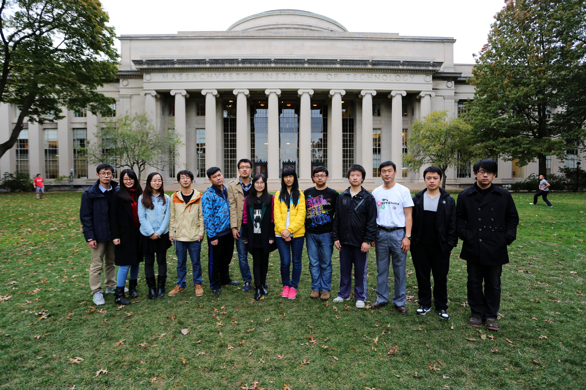
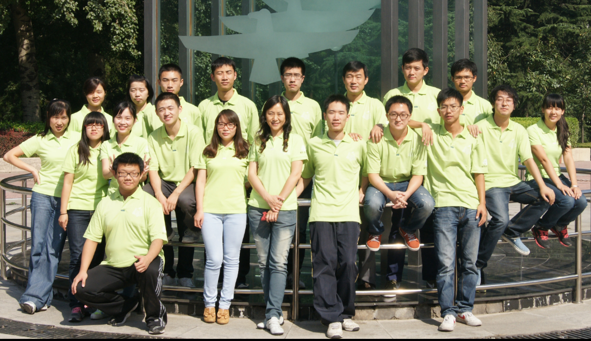

/ 国际遗传工程机器设计竞赛 /
/ igem /
igem由美国麻省理工学院 2003 年创办，2005年发展成以合成生物学（Synthetic Biology）研究为核心的国际赛事，旨在通过竞赛的形式，回答合成生物学中的核心问题——能否在活细胞中使用可互换的标准化元件构建简单的生物系统，并且加以操纵。IGEM每年有来自全球各地的上百支队伍参赛，其中不乏来自哈佛大学、麻省理工学院、斯坦福大学、加州理工学院、牛津大学、剑桥大学、帝国理工学院等世界名校的参赛队伍。比赛要求各参赛队伍在赛前一年内运用工程学的理念和基因操作的手段设计和实现某种新的生物机器功能，并通过网站、演讲、海报、科普实践等形式进行展示交流和评比。IGEM不仅仅是一项重要的学术交流和竞赛，她还是学生们很重要的与各国文化和艺术交流的平台。
/ BIT-China简介 /
生命学院李春教授紧跟学校本科生培养的国际化方向需求，在2012年组建了北京理工大学的iGEM队伍BIT-China，于2013年首次参加了iGEM竞赛，并连续3年获得科技作品竞赛的金奖，其中2015年还获得了“Best New Application”的提名（前五名），取得了历史性突破。 BIT-China 团队的主力队员大部分来自生命学院，同时还与来自不同学院、专业的学生团结合作，项目的完成需要包括图像处理、网页设计与制作、数学建模等在内的多个方面的人才。BIT-China在队员选拔上采用报名-面试1-培训-考察-面试2-确定的模式，充分发挥学生们的创新能力、团队合作能力和实践操作能力。团队以本科生为主体，同时还有指导老师和研究生技术顾问作为后盾，课题的研究依托于指导教师的科研平台，并有固定的活动室，这些都为项目的顺利实施提供了良好的软件和硬件平台。
/ 指导教师及团队 /
指导教师：李 春，教授/博士生导师、国家杰出青年科学基金获得者。
北京理工大学理学与材料学部副主任委员，生物化工学科带头人。已发表学术论文216篇，其中SCI收录81篇、EI收录100篇次，获授权专利13项，获省部级科技成果奖3项。2004年入选教育部“新世纪优秀人才支持计划”，2005年获“霍英东青年基金”，2006年享受国务院政府特殊津贴。现担任中国工业生化与分子生物学分会副理事长,《Frontiers in Biotechnology and Bioengineering》的副主编，《化工进展》、《农业工程学报》和《生物加工过程》编委，《中国生物工程杂志》和《生物产业技术》理事。
指导团队：郭淑元教授、霍毅欣教授、李珺副教授、冯旭东博士、王颖博士、吕波博士等。
/ 历年iGEM链接 /
本项目在大肠杆菌中构建了P-SLACKiller( 质粒丢失筛选器)系统，该系统主要包括细胞内质粒数量的精确识别及实时感应系统，当质粒数量减少到特定阈值时将在低效生产细胞内启动自杀系统，通过对基因线路的优化，数学模型的建立，将丢失的质粒数与自杀基因的表达之间形成计量关系，杀死在一定范围内工作效率低下的工程菌，从而实现高效生产细胞的不断富集，保证生产效率的最大化，优化菌群质量结构以维持工程菌的高效生产性能，为微生物制造体系的高效性提供新的思路和解决方法。


2015年BIT-China团队在大肠杆菌菌体内构建了一条名为“pH-Controller”的基因线路，使大肠杆菌不仅能耐受酸性或者碱性的环境，并且能通过自身产酸或者产碱，将外环境的pH调节至自身最适范围内。因为在发酵工业中，企业经常需要花费大量的人力、物力来精确调控发酵体系的pH。一旦体系pH值不在工程菌的最适范围内，发酵最终的生产效率大幅降低，当工程菌被导入“pH-Controller”后，即使体系pH不在工程菌的最适范围内，工程菌仍旧能保持高活性并且能自己调节环境的pH。
 

随着微生物工业的快速发展和人们对病原微生物的深入研究，人们的生活水平和健康水平得以大幅提高。然而，工业生产菌株被盗会造成商业机密的泄露、致病菌株外逸会引起生物安全问题，那么，当保护这些细菌的物理屏障被攻破之后，能否通过基因工程的方法在分子层面上再加一层保护屏障呢？ 基于此，2014 BIT-China团队通过模仿电子密码锁的原理，聚焦于生物安全和工业微生物菌种安全问题，设计出了E.co-Lock以解决这一问题。层状逻辑门、小RNA调控系统和Min系统是E.co-Lock的三个主要组成部分，通过多层逻辑与门的组合，我们设定了不同的“密码”(即不同的化学诱导剂)，小RNA调控系统通过抑制目标基因的翻译而保证密码输入的顺序性,Min系统(又称为数量调控系统)，在这里被重新设计以实现将目标菌株稳定在低密度的功能，进而实现菌株被锁定的状态,因此,商业菌株或病原菌在安装E.co-Lock后均能处于更严格的控制之下，商业菌株即使流失也能有效保护商业机密、致病菌株泄露后也不会对环境造成不良影响。
 众所周知，微生物发酵过程控制及其设备是一类高能耗的过程和装置，发酵过程中产生的热量必须通过低温循环水带走。据统计，如果发酵过程控制温度每升高2-3℃，冷却水消耗将减少15%。以年产万吨发酵产品的企业计算，仅冷却用电可减少170-200万千瓦时。此外，发酵过程温度的提高不仅可以减少发酵体系的染菌风险，也可以使微生物的发酵周期缩短，这样会明显提高生产效率并大大降低生产成本。
BIT-China队伍通过设计自主耐热和数量调控基因线路及与底盘宿主的适配性研究拓宽了工程菌的最适温度范围，可智能地调节发酵产热，从而大大降低了微生物反应过程中的能耗，提高了微生物细胞的热响应和耐热性对于提高生物反应效率、降低控制过程能耗及生产成本,达到了节能降耗和二氧化碳减排的效果，为绿色地球贡献力量。
